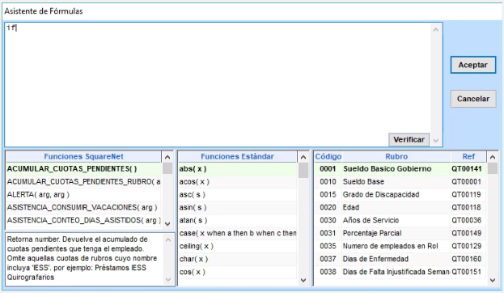
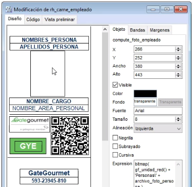
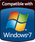
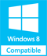
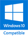

Filtros Intuitivos, Fácil para el Usuario
- Busca, ordena, clasifica.
- Filtros tipo Excel para escoger múltiples valores.
- Diseño amigable para una mejor experiencia de usuario.

Programable
- Máxima flexibilidad, con la funcionalidad de programación, desde expresiones simples hasta los scripts más complejos.
- No necesita recompilación, ya que es código interpretado en tiempo real.

Personalizable
- Independencia de su proveedor para realizar cambios.
- Modifique la presentación de sus reportes mediante una práctica herramienta visual.
Características Importantes
- Desarrollado con la mejor tecnología: versión escritorio en PowerBuilder, versión web en Microsoft C# ASP.NET MVC.
- Compatible con Windows 11, 10, 8, 7 y todas las ediciones Server.
- Soporta bases de datos relacionales como Microsoft SQL Server u Oracle.
- Permite además la replicación de datos, independientemente de la marca de su base, para consolidar la información de todas sus sucursales.
- Ambiente multi-empresa, multi-sucursal y multi-usuario.
- Facilidad de uso por su interfaz orientada a escritorio.
- Exportación de todos los reportes a Excel, Word, HTML, PDF, texto, etc.
- Envío directo de reportes o información por mail, usando su perfil de Outlook.
- Administración de usuarios y perfiles de permisos por empresa, sucursal, pantalla, proceso, reporte, tabla y campo.
- Completo control de auditoría para registrar: quién, dónde, cuándo y qué cambió.
- Actualización automática de la base de datos: el cliente no deberá ejecutar ningún script SQL al recibir nuevas versiones del sistema.
- Herramienta SQL para administradores o usuarios avanzados, para generación de reportes avanzados o modificaciones especiales.
- Herramientas básicas y avanzadas integradas a lo largo de todo el sistema, que facilitan tareas comunes como buscar, ordenar, filtrar, mover, esconder, etc.
- Reportes de texto configurables mediante plantillas en Word, como contratos y certificados.
- Inclusión dinámica de pies de firma personalizables en cualquier reporte.
- Generación de archivos mediante plantillas configurables.
Requerimientos
Servidor de Datos
- Windows 2000 en adelante
- 200GB de espacio libre para datos
- 8GB RAM (recomendado 16GB)
- SQL Server / MySQL / Oracle
PCs Cliente
- Windows XP en adelante
- 100MB de espacio libre en disco
- 4GB RAM (recomendado 8GB)
- Resolución mínima: 1024 x 768


